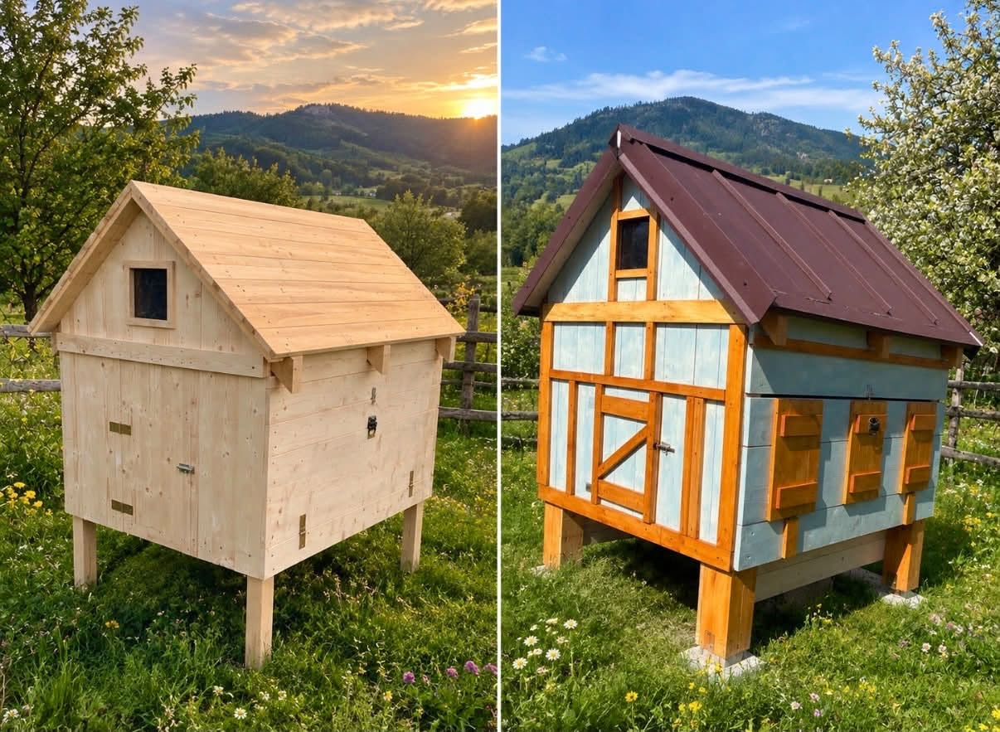

Kto sme a čo robíme?
Sme tím skúsených tesárov a odborníkov, ktorí sa špecializujú na výrobu tradičných zrubov, precíznych krovov na mieru, rekonštrukcie drevostavieb a realizáciu kvalitných striech.
Každý náš projekt je originál, presne prispôsobený vašim predstavám, životnému štýlu a požiadavkám na moderné bývanie.
Prečo si vybrať práve nás?
- Poctivé remeslo: Spájame tradičné tesárske postupy s modernými technológiami, aby stavby dosahovali vysokú pevnosť a dlhú životnosť.
- Individuálny prístup: Sme s vami od prvotného návrhu až po konečnú realizáciu. Počúvame vaše priania a pomáhame ich premeniť na skutočnosť.
- Kvalitné drevo: Vyberáme prvotriedne drevo so starostlivo overenou pevnosťou, estetickými vlastnosťami a odolnosťou.
- Skúsenosti a dôvera: Záleží nám na každom projekte a na spokojnosti zákazníkov.

Od prvého návrhu po dokončenie
Každý projekt začíname rozhovorom a výberom vhodného riešenia. Pomôžeme vám s návrhom, materiálom aj plánovaním prác, aby výsledná stavba zodpovedala vašim potrebám.
Pri realizácii dbáme na precízne spracovanie detailov, bezpečnosť a čistú prácu. Výsledkom je kvalitná drevená stavba, ktorá bude slúžiť dlhé roky.
Napíšte nám